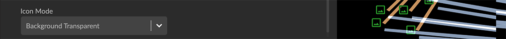

Setting Project Display Options The Project panel’s Settings tab includes options to set the appearance of the project space and the project-wide appearance of nodes and edges. Setting display of the project space For the project space, you can choose a dark or light theme, and show or hide the Snapshots window and information panels. You can also scale the size of nodes or width of edges, and set a Fog Density scale so that nodes and edges become dimmer the further from the viewer they are in the virtual 3D space. To set display of the project space: Click to open the Project Panel and Settings tab. Set one or more of the following display options: Click the Theme icon to toggle between the default dark mode and light mode. Click the Quick Info checkbox to display an information pane when you roll over a node or edge. You can also click Quick Info in the context menu to toggle the rollover info pane on and off. Click the Show Snapshot checkbox to display the menu bar for the floating Snapshots window. At any time, you can click the X in the Snapshots title bar to dismiss it from the project space, which also automatically unchecks the checkbox. Use the Fog Density slider to enhance the 3D experience by dimming nodes and edges the further from the viewer they are in the virtual 3D space. A fog density of zero (0) provides crisp rendering of all graph elements. Setting project-wide node display You can scale the project-wide size of nodes and their captions, control whether an avatar image or the pin icon is displayed on the node, and select an icon sheet and icon display mode for the project. In the legend list, click the colored dot next to a Category item for the Styling Setting dialog to set node color, icon, avatar, size scaled by a property value, and captions by property value for that Category. This icon will be applied when you display the Property list, but you can set a different color and icon for specific property values. To set project-wide display of nodes: Click to open the Project Panel and Settings tab. Set one or more of the display options for nodes, as outlined below. Auto Avatar checkbox. Show images associated with nodes through a URL property of its Category. An attempt to load an image will be made for any property key of _photo, photo, avatar, image, picture, or icon which has a property value starting with http, https, or ftp. Formats supported are jpg, jpeg, png, gif, bmp. An image appears when you zoom in to a fixed virtual distance from the node. When you zoom out from that point the Category’s color and icon is displayed instead. If Auto Avatar is not checked, images will appear only if you select an Avatar Url property for a specific category in the category’s Styling Setting dialog or in the Project > Category tab. For faster navigation in the graph space, deselect the Auto Avatar checkbox. Icons (if any) are still displayed. Auto Caption checkbox. Automatically apply a default caption property (caption>label>title>name) for all categories and relationships. Hide Pin Icon checkbox. Hide the Pin icon that displays on a pinned node. The Pin icon can obscure graph patterns you want to visualize using color, icons or images. Node Size Scale slider. Set a global value for the size of all nodes. This value controls the relative size scale for all nodes. It is applied independently of scaling a category’s node size by a property value. Caption Size Scale slider. Set a global value for the size of captions for both nodes and edges. Node Caption Position dropdown menu. Position options are Right, Top (left-aligned or centered), Bottom (left-aligned or centered), and Vertical. Icon Mode dropdown menu. Set a display mode for icons overlaid on nodes. Options are: Background Transparent. Removes the node background. Only the icon is colored and the rest of the node circle is transparent.  Icon Transparent. Makes the icon transparent, and overlays it on the node circle. Mix Color. Automatically selects a lighter, contrasting hue for the icon and overlays it on the node circle. Setting project-wide edge display Project-wide options for displaying edges let you scale edge width and caption size, use a curved or straight line, show or hide directional arrowheads, show or hide the relationship name, and display a blended, lighter color for edges that overlay one another. Click the colored line next to a Relationship item in the legend list for a dialog to set edge color, edge width scaled by a property value, and captions by property value for that Relationship. These can also be set in the Project panel and Relationship tab. To set project-wide display of edges: Click to open the Project panel and Settings tab. Set one or more of the following display options for edges: Auto Caption checkbox. Automatically apply a default caption property (caption>label>title>name) for all categories and relationships. Alternate Caption Rendering checkbox. Use a more compact rendering of captions which may be more legible. Show Relationship Name checkbox. Label every edge with its relationship name. Use Curve Line checkbox. Represent edges as curved lines rather than straight lines. This is especially useful when pairs of nodes in a graph share multiple relationships. Hide Arrow checkbox. Hide the arrowheads that show the edge direction. Blend Edges checkbox. This enables additive blending of edge color such that multiple edges stacked on top of one another will appear brighter. Dash Line checkbox. Render edges as a dashed, rather than a solid line. Edge Width Scale slider. Set a global scale value fo the relative width of all edges. Caption Size Scale slider. Set a global scale value for the size of captions for both nodes and edges.